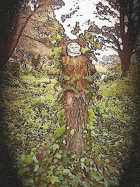

The universe has banished us;
fragile gauze hair on tiny forearms
succumbs to renegade heat waves
and celestial currents, which now and again
sabotage our bones, flaking and peeling skin
like pastry dough. Until we forgo
our ambulant nomad ways, return
to fur, or learn to play possum, our doom
will find us roasted and sagging. Or perhaps
we should find our treeness, wear thick bark
and leaves that canopy over necks.
With years symmetrically bubbling
out of a center trunk, each milestone
would bear another ring of flesh
to shield away the hemisphere’s burley snarl.

Amy Nawrocki is a poet and teacher living in Hamden, CT, USA. She teaches English and Creative Writing at the University of Bridgeport. Her poems have recently appeared in Sol Magazine, Rumble, Umbrella Journal, SNReview and Modern English Tanka. She won the2008 Litchfield Review Writing Contest and was a finalist for the 2007 Codhill Press Chapbook Competition. Her chapbook Potato Eaters will be published by Finishing Line Press in the fall of 2008.